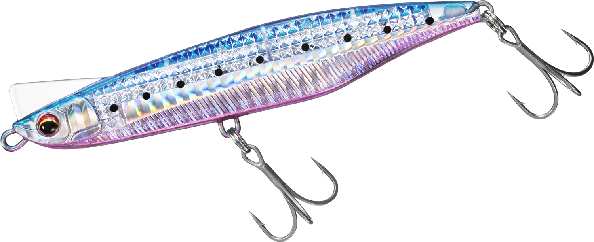

オーバードライブ107S
（ヘビーシンキングペンシル）
オーバードライブ107S（OVER DRIVE 107S）はDAIWA（ダイワ）のヘビーシンキングペンシルです。
大型ベイトパターンに対応する遠投ヘビーシンキングペンシルとして展開されるシリーズの107mmモデル。3分割の高フラッシングサイドデザインと水平フォール姿勢で、座布団ヒラメや沖の青物までワンキャストで届かせる飛距離が最大の魅力です。

画像出典:DAIWA公式HP
スペック
- メーカー
- DAIWA（ダイワ）
- タイプ
- ヘビーシンキングペンシル
- 全長
- 107mm
- 自重
- 40g
- フック
- #4
- リング
- #4
- 飛距離
- Max109m／Ave105.8m
- ターゲット
- ヒラメ・マゴチ・シーバス・青物
- 価格
- 2,090円（税込）
- 発売
- 2026年9月
▼今すぐチェック

オーバードライブ107Sの特徴
大型ベイトパターンを遠投で攻略する、シリーズ最大クラスの飛距離とアピール力
-
3分割高フラッシングサイドデザインで強い視覚アピール
ボディサイドを3分割したフラッシング設計により、ハイアピールで大型ベイトを演出。マズメや濁り潮でも魚にルアーの存在を強くアピールできる。
-
スロー〜ハイスピードまで対応する2段アクション
スローリトリーブではワイドなテールスイングで食わせの間を作り、高速リトリーブに切り替えるとイレギュラーローリングで見切らせない誘いに変化する。
-
水平フォール姿勢と1.2mm貫通ワイヤで大型対応
着水後は水平姿勢でフォールし、ボトム付近の魚にも自然にアプローチ。1.2mm貫通ワイヤ仕様で座布団ヒラメや青物とのファイトにも耐える強度を確保している。
オーバードライブ107Sの使い方
基本はただ巻き。スローリトリーブではワイドなテールスイングでヒラメ・マゴチにじっくり口を使わせ、高速リトリーブに切り替えるとイレギュラーローリングで青物のバイトを引き出しやすくなる。
着水後は水平フォールでボトム付近まで沈められるため、ストップ&ゴーでボトム着底からのただ巻きに移行するパターンも有効。飛距離を活かして沖のブレイクやカケアガリまで届かせ、レンジとスピードを変えながら探っていくのが基本の組み立てです。
オーバードライブ107Sの得意な状況
サーフや堤防からの遠投で沖のブレイク・カケアガリを狙う状況が最大の出番。
大型ベイトが接岸する秋の座布団ヒラメシーズンや、沖のナブラを射程に収めたい青物狙いにも強い。飛距離が必要なポイントで、大型ベイトパターンにマッチさせたい場面で選びたい1本です。
ワンポイント
レンジキープが難しい場面では、着水後のフォールタイムをカウントして毎投同じレンジを通すと、反応のあるレンジを絞り込みやすくなります。
潮や風でラインが流される状況では、リトリーブ速度を一段上げてラインテンションを保つとアクションが安定します。
オーバードライブシリーズの使い分け
| モデル | 全長／自重 | 得意な場面 |
|---|---|---|
| 65S | 65mm／28g | 小型ベイトパターン・扱いやすいライトな入門サイズ |
| 80S | 80mm／32g | オールラウンド・シリーズのベーシックサイズ |
| 95S | 95mm／35g | 中型ベイトパターン・汎用性重視 |
| 107S | 107mm／40g | 大型ベイトパターン・座布団ヒラメ（本記事のモデル） |
| 120S | 120mm／45g | シリーズ最大遠投・沖の青物ロングキャスト |
オーバードライブは65S〜120Sの5サイズ展開で、大型ベイトパターンへの対応力と飛距離をサイズ選択だけで使い分けられる。107Sはその中でも「大型ベイトと飛距離のバランス」を担う中核モデルだ。
人気カラー
オーバードライブ107Sは通常仕様5色＋レーザーインパクト仕様5色の全10色展開。サーフでオススメのカラーを厳選して紹介します。
朝夕マズメや濁り潮に強いチャート系の高アピールカラー。
サーフの定番ピンク系。澄み潮・ハイプレッシャー下でも使いやすい。
グロー入りでナイトゲーム・ローライト時にも対応できる1色。

LIブルピンイワシ（レーザーインパクト仕様）視認性を高めたレーザーインパクト仕様のイワシパターン。高アピール重視の場面に。
画像出典:DAIWA公式HP
オーバードライブ107Sに似ているルアー
-
ネッサ ウィングビーム80HS
シマノ
詳細はこちら＞
全長80mm・自重35gのヘビーシンキングタイプ。コンパクトながらメタルジグ並みの飛距離を出せる設計で、サーフから沖のブレイクを狙う考え方はオーバードライブ107Sと近い。
-
 ビスタ100S
DUO
詳細はこちら＞
ビスタ100S
DUO
詳細はこちら＞
全長100mm・自重34gのジグミノー。固定重心・高比重センターバランスで飛距離とレンジキープを両立するサーフ特化モデルで、フラットフィッシュ狙いという狙いどころが共通する。
-
 フリッド125S
ブルーブルー
詳細はこちら＞
フリッド125S
ブルーブルー
詳細はこちら＞
全長125mm・自重37gのシンキングペンシル。業界初のツインリップ構造と後方重心で高速フォールと明確な引き抵抗を出す設計で、サーフのヒラメ・マゴチゲームでオーバードライブ107Sと選択肢が重なる1本。